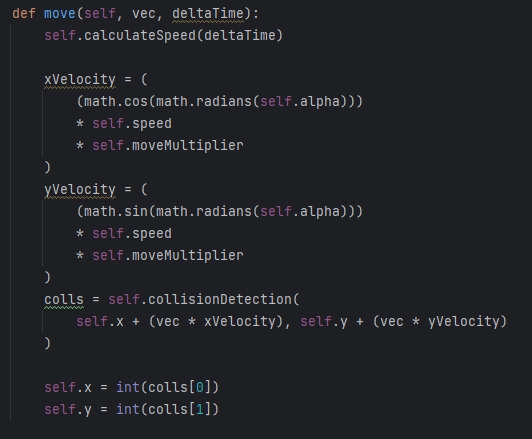

While running the main game we experienced a significant amount of lag.
One reason was, that with every self.update() call of our window, we iterated through every tile to draw the arena.
We changed the code, that the arena is drawn once and saved as a pixmap.
With every self.update() the arena is displayed now, just by drawing the single pixmap.
We also have significantly increased the size of the tiles, which not only is more visually appealing but also improves the collision detection efficiency.
Added robot classes with different stats and made them pickable in the Menu
The different classes
Robots will have different stats(health,speed) and skills based on their class.
Destroyer is supposed to be the "glass cannon". It has low health but will deal high damage.
Tank is the opposite of the destroyer class. High health, but low damage and speed.
Velocity has average health but high speed.
By adding different robot classes we want to add more variety to the gameplay.
Functions which allow changing the robot class and arena in the menu:
The robot classes are saved in a list.
When the button is pressed, we remove the first element of the list and save it.
We append the deleted class to the list again.
Afterwards the text of the button is changed to the class name.
If the arena button is clicked, a dialog window is opened, where the player can choose the wanted arena.
Short video to demonstrate the selection in the menu:
If the player attempts to start the game without selecting a class and arena, error messages will pop up.
Improvements to MapEditor
Shaped the window grid based
GRID SIZE(20) * GRID SIZE QLabels are created.
With setGeometry() the appropriate size and position is added to the QLabel.
Afterwards the styleSheet of the label is set, so the grid is visible to the player
Included the actual graphical tiles
Beforehand maps were created, by drawing rectangles with different colors which represented the tiles.
Now by clicking within the grid, it automatically fills with the previously selected terrain.
With these changes, the mapeditor is pretty much finalized.
The only additional feature I want to include is, to give the player the ability to set starting positions of the robots.
Map creation
I designed several Maps with the mapeditor.
The Maps will be included in the game and are playable.
Adding Robot to Robot Collision detection (Tom)
Since we don't want our robots to be able to drive through each other we extended our previous collision detection function to also take other robots into account.
We do this by giving each robot an array which conatins all other robots currently alive in the arena.
And then iterating over all other robots to check if we are intersecting with any of them. Since all of our robots will be of circular shape this is quite inexpensive.
Making collision detection much more efficient to combat lag(Tom)
We were Iterating over each point our robot was occupying using the loop below:
This was a terrible idea, with the current set up of tile size and robot radius we were iterating over the inner loop around 32000 times! This caused significant lag in our game.
Since we are only looking for tiles with collision != 0. Iterating in steps of 1 is oc course unneccesarry, because each tile is much larger than 1 pixel we would be checking each tile thouand of times.
Making our tiles larger than the Robots allowed us to go in steps of robot radius as seen below. Which means executing the inner loop less often.
Using this approach we were able to go from 32000 loop iterations to only 100-200.
Adding Tile Logic to our Game (Tom)
In our Game we have differnet kinds of Terrain, such as Fire, Water, Spikes and more. Each of these should have a specific effect on the players whenever they drive over them.
At first our robots were much bigger than our Tiles, meaning at any point the robot would be on multiple tiles at a time, so we opted to apply every effect of every Tile the Robot was currently on.
This was a bad Idea since its very hard to see which tiles you are actually on and the sum of all the effects can be quite overwhelming and even cancel eachother out, leading to very confusing behaviour.
We have since adjusted our Robots to be much smaller than the tiles, now we only ever apply the effect of one Tile!
Size of a Robot next to a Tile:
This had the nice side effects of making our collision detection faster since there are less tiles to check for collision and our reading of the Arena Text file has also gotten faster since it is smaller now.
How we apply effects of each Tile type currently:
The Move multiplier as seen above is then multiplied with our speed in the move function, resulting in slower or faster movement.

Looking for SFX and music for our Game(Tom)
We also want some basic sounds for our Game that are not going to get us into any legal trouble because of copoyright.
I own a license to all the pre selected sounds so we are in the clear as far as copyright goes. If you want to listen in, you can find all the preselected sounds under Art/Audio.
Adding more hitscan weapons(Marcel)
added 3 new hitscan weapons they differentiate in damage, length of the hit range and the time between shoots.
-basicLaser: has a lenght in the middle compared to the other weapons deals only little damage therefore you can keep shooting.
-strongLaser: has a lenght shorter compared to the other weapons deals only little damage more than basiclaser therefore you can keep shooting.
-sinper: long range, high damage and high cooldown
added a dash ability:
moves a big distance has a cooldown we use the tick function in order to get collision with objects
added "dying":
we check if the hp are zero for any robot if they are we stop the thread, remove the thread from the dictionary
and after that we remove the robot from the list so that we stop drawing the robot.